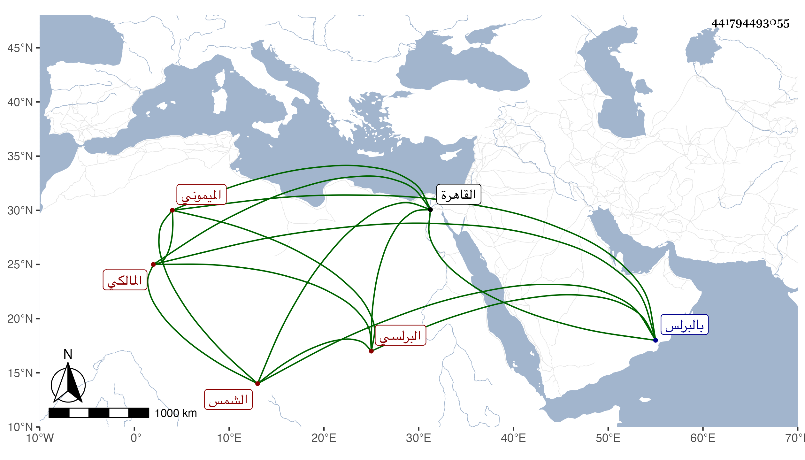

0902Sakhawi.DawLamic.ITO20230111-ara1.EIS1600.441794493055
Biography ID: 441794493055
357
محمد بن عرام الشمس الميموني الأصل البرلسي المالكي . أخذ الفقه واصوله عن محمد الرباحي والفقه والفرائض والعربية عن يحيى المغربي الفرضي والعربية والصرف والأدب عن الزين خلف والد أبي النجا في آخرين منهم بالقاهرة الزين عبادة ، وحج وتميز في الفضيلة وأقرأ الطلبة فانتفع به جماعة كالبدر حسن الشورى وأفادني ترجمته وأنه كان ينسج على النول على طريقة جميلة من الديانة والورع . مات سنة ثلاث وخمسين بالبرلس رحمه الله .
